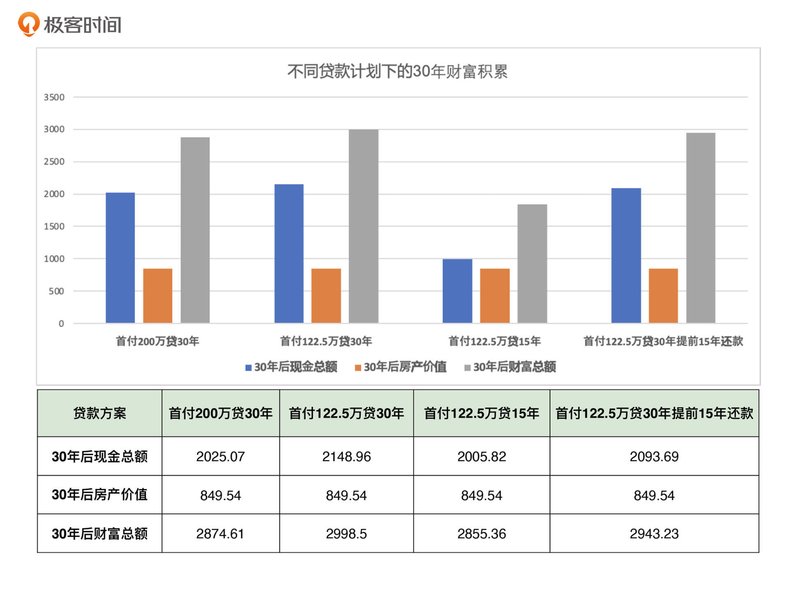
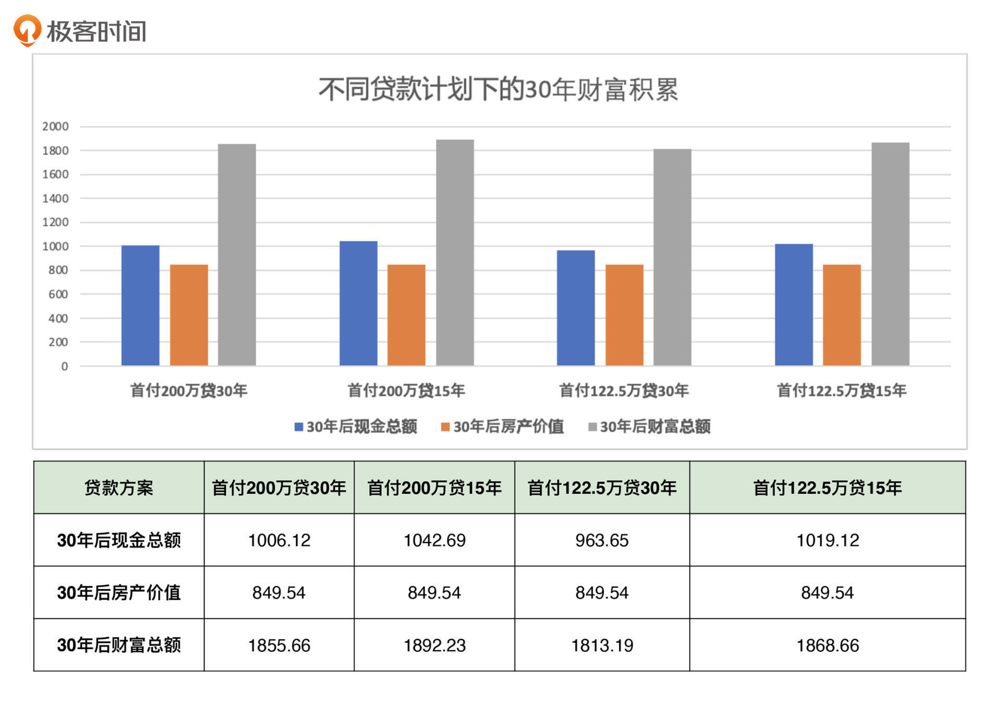

- 00 开篇词 为什么说程序员最适合学财富管理？.md.html
- 01 财富框架：建立属于你自己的财富双塔.md.html
- 02 个人发展：你自己的发展才是最大的财富源泉.md.html
- 03 理财金字塔：如何建立稳固的投资理财结构？.md.html
- 04 实战知识：有哪些收益稳健的经典资产配置组合？.md.html
- 05 支点投资法：主动投资是讲逻辑的！.md.html
- 06 不当韭菜：在财富管理的过程中摆正心态，知己知彼.md.html
- 07 职业方向：如何选择一个有前景的职业方向？.md.html
- 08 职业规划：大公司VS小公司，怎样选择更有前途？.md.html
- 09 期权股权：如何正确处理公司的期权、股权？.md.html
- 10 跳槽涨薪：如何规划一条合理的职业道路？.md.html
- 11 财富拓展：35岁失业？程序员如何拓宽财富渠道？.md.html
- 12 房产投资：如何做出理性的买房决策？.md.html
- 13 实战知识：让我们编程计算下怎么还房贷最合适.md.html
- 14 基金投资：如何让专业人士帮你赚钱？.md.html
- 15 实战知识：如何选出一只优质的基金？.md.html
- 16 股票投资：最适合散户的股票投资方法是什么？.md.html
- 17 投资闭环：如何成为越来越专业的投资者？.md.html
- 18 技术优势：程序员如何用技术超越其他投资者？.md.html
- 19 量化投资：典型的量化投资系统都包含哪些模块？.md.html
- 20 价值投资：永远不过时的中长期投资策略.md.html
- 21 趋势跟踪：怎样跟着趋势一起赚钱？.md.html
- 22 轮动策略：如何踩准市场变换的节奏？.md.html
- 23 对冲思想：这个世界上有稳赚不赔的生意吗？.md.html
- 24 多因子模型：整合不同策略，形成合力的顶层框架.md.html
- 25 机器学习：我们能用机器学习来建立投资模型吗？.md.html
- 26 量化实战：从0到1搭建起一套简单的量化投资系统（上）.md.html
- 27 量化实战：从0到1搭建起一套简单的量化投资系统（下）.md.html
- 番外一 王喆对话李腾：程序员对基金经理的灵魂十问（上）.md.html
- 番外三 有哪些能够持续学习的参考资料和相关网站？.md.html
- 番外二 王喆对话李腾：程序员对基金经理的灵魂十问（下）.md.html
- 番外四 知识总结：这门课的全部思维导图.md.html
- 答疑课堂（一） 财富框架篇、个人发展篇思考题集锦.md.html
- 答疑课堂（二） 投资实战篇、投资进阶篇思考题集锦.md.html
- 结束语 知行合一：财富管理是一生的事情.md.html
- 捐赠
13 实战知识：让我们编程计算下怎么还房贷最合适
你好，我是王喆。
上一讲，我详细讲解了买房的决策链条。但是我知道，还房贷这个问题还困扰着很多想买房的同学。那么今天，我们就来个实战环节，带你编程算一算到底怎么还房贷比较好。
提到还房贷，你可能会有一堆细节问题：
- 首付多点好，还是少点好？
- 贷款30年好，还是15年好？
- 是提前还款合适，还是按计划还完合适？
- ……
确实，一套商品房的贷款动不动就一两百万，如果处理不好，会直接影响到我们未来的现金流和生活质量。但你可别忘了，我在开篇词里就讲过，我们程序员在财富管理上是有三大优势的。今天，我就利用我们独有的“程序员优势”，编程验证一下各种房贷方案的优缺点，帮你彻底解决关于还房贷方式的疑问。
影响房贷的因素有哪些？
作为一个程序员，当我们着手解决问题的时候，要做的第一件事情是什么？我想你对此肯定不会陌生。我们首先要做的，就是清晰地定义出这个问题。
“怎么还房贷比较好”，这个问题的表述显然是非常模糊的。那我就来帮你翻译翻译，看看怎么更清晰地定义它。
这个问题应该是：如何确定房贷的首付金额和还款年限，让我们的家庭财富在一个目标期限上最大化？
现在我相信你已经明白了，我们其实是在解决一个最优化问题。要确定的变量很简单，只有两个，就是首付金额和还款年限；优化的目标也很简单，就是指定一个目标期限，比如30年，让我们的家庭财富在这个期限内积累得最多。
说实话，这个问题要是放到咱们程序员的算法面试中去，估计都显得太简单了。但就是这样，仍然有大量的程序员想不清楚这个问题，还需要求助别人。这个现象本身就很值得我们分析。如果你也是这样一位程序员，完全不会把你学习的专业知识运用到生活中去，那真是得反思一下了。
言归正传，定义清楚了问题，我们还得弄明白影响家庭财富的主要变量有哪些，这样才能编程去优化它。从我自己的经验出发，我觉得主要有下面六项：
- 房产总价
- 房产升值速度
- 房贷利率
- 工资收入
- 理财收入
- 家庭生活支出
这六个变量，再加上问题中的两个关键变量，首付金额和还款年限，共同组成了影响家庭财富的所有要素。那剩下的事情就简单了，我们就编程来看一看，到底如何贷款才能让我们积累的家庭总财富最多。
为了方便你自己进行实验，我开源了一个计算房贷的小程序，你可以去这个GitHub地址clone下来，自行演算。
首付到底是付得多好，还是付得少好？
好，那么我们先来着手解决第一个最关键的，也可能是你最关心的问题：我们买房的时候，是应该多交一点首付，还是应该以最低的首付比例贷款，把余钱放在自己手里？我们举个例子来说吧。
我们假设小Y是一名在北京工作了五年的程序员，他看上了一套郊区小两居，价值350万元。小Y工作这5年，积累了100万存款，同时父母可以支援他100万，也就是说他有200万可以动用的购房款。这时候问题就来了：他是把200万全部用作首付，还是只交35%的首付款（122.5万）？
现在我们已经知道了房产总价这个关键变量，假设还款年限为30年，为了解决首付金额的问题，我们还是要考虑上面列出的其他5个要素。这里，我们根据目前（2021年8月）的客观情况，给出这些变量。
- 房产的升值速度：我们假设是每年3%。
- 房贷利率：目前是4.65%。
- 工资收入：小Y的工资税后收入是每月3万元。
- 理财收入：我们按永久组合的收益率来算，是6.8%。
- 家庭生活支出：每月5000元。
明确了这些要素，我们就来看一看，在这两种首付方案的前提下，30年后小Y家庭的财富总额分别是多少。
通过程序进行模拟后，我把得到的结果展示在了下面的柱状图中（这里先看左侧两图的对比）。

从图中我们看到，同样是贷款30年，如果小Y只交122.5万的首付，留下剩余的77.5万作为理财款，那么在还完贷款的30年后，他的财富总额会是2998.5万；而如果把200万全部作为首付，他的财富总额是2874.6万。低首付方案的财富总额多出了100多万。
通过这个对比，我们似乎可以得出结论，应该是首付交得越少越好。至少在小Y的这个场景下，这个结论肯定是正确的。那么是不是说，在所有场景下，都是首付交得越少越好呢？你可以先思考一下，这一讲的后面，我再详细谈这个问题。接下来，我们先来看第二个关键问题，贷款期限。
到底是贷款30年好，还是贷款15年好？
除了首付的金额，你可能还纠结于贷款期限的问题：到底是贷款30年好，还是15年好呢？除此之外，对于那些已经有了房贷的同学，在有余钱的情况下，要不要提前还贷呢？
要回答这两个问题，我们当然还是要让程序“说话”。这里我们继续用小Y的例子：在首付款固定为122.5万的情况下，我们把贷款期限分别调成30年和15年，让我们看一看30年后，两种情况下的最终结果。
再回到上面的图片，观察第二个和第三个柱状图，你会发现：采用这两种贷款方案，最后得到的结果差异也很大，贷款15年的财富总额足足少了140多万。
这个结论确实有点反直觉，按理说贷款15年的话，我们还的房贷利息应该比贷款30年低很多，为什么反而少积累了这么多财富呢？这个原因也先不展开说了，我们等会一起详细分析。
可能还有同学会说：我现在已经贷款了七八年了，也攒了一些闲钱，我在纠结是不是应该早点还掉房贷。那我们就再验证一下“贷款30年，在第15年的时候一次性还清剩余贷款”这个方案怎么样。
从图1 我们看到，这个方案的财富总额是2943.2万元，比最优方案少了50万左右。所以和按时还款比起来，提前还款的方案其实也没有什么优势。
经过这几次的验证，似乎说明首付越低，还款时间越长，就越有利于我们财富的积累和增长。事实到底是不是这样呢？在这个结论的背后，还隐藏着什么别的关键因素吗？下面，我们就来好好讨论一下。
影响房贷的终极要素是什么？
不知道你有没有注意到，我们在做上面的计算的时候，默认了小Y的理财能力是比较强的：能够坚持用永久组合配置自己的所有理财资金，能够产生稳定的6.8%的年化收益。其实，这个要求对普通人来说是非常高的。
如果我们假设小Y是一个极端保守的人，只存货币基金或者银行定期，他的理财收益率只有3%，那么结论会不同吗？我们还是沿用上面的几个贷款方案，只把理财收益率从6.8%修改到3%，看看结果会不会有什么不同。

看完图2的结果，你可以惊奇地发现我们的结论逆转了，现在首付高、还款时间短成了更合适的选项。其实，如果理财收益率降低到3%，上面关于贷款期限和是否提早还贷的实验结果也会逆转，你可以自己通过程序实验一下。
有心的同学可能会问了：那其他变量呢？比如个人收入、生活支出的改变，会导致结论反转吗？很简单，你再用我们的程序模拟一下就行了，我这里就直接说结论了：不会。只有理财收益率和房贷利率的关系，是影响房贷方式的终极要素。
用一句话总结就是，如果你的稳定理财利率能够高于房贷贷款利率，那么首付少付、还款年限长合适；反之，如果你的稳定理财利率低于房贷贷款利率，那么首付多付、还款年限短合适。
为什么会这样呢？除了程序演算的结果告诉了我们这个事实，从逻辑上其实也不难理解。举个例子：可以想想，如果你少交了50万首付款，把这些钱拿去理财，是不是能够赚到钱，赚到的钱能不能抵消掉那多出的50万贷款产生的房贷利息。如果能抵消，甚至超出，那你还能获得多余的理财收益；如果不能，那你就不如趁早还贷，因为你的理财能力还不够强。
结合实际情况选择合适的贷款方案
当然，如果首付付得少的话，还有一些其他的好处。比如，流动性资金会多一些，能够抓住未来更多的投资机会，能够有现金应对更多不可知的应急事件，等等。但是，我们并不能简单地说首付多好还是少好，关键是要根据实际情况制定最适合自己的方案。
拿我自己的例子来说，我在做买房决策的时候会做两件事：
第一件，是根据自己掌握的资金，严格地控制购房预算。
比如，假设我现在有200万购房款，我要把房价和购房款的比例控制在两倍以内，那我的购房预算就是400万。
第二件，是尽量少付首付，留一些流动资金。比如我在真正贷款的时候，即使可以付50%的首付，也会按照35%的比例付首付。
一方面，这是因为我对自己的理财能力有足够的信心，相信自己有能力实现超过4.65%的理财收益；另一方面，我目前在美国工作，这里的房贷利率比在国内低得多，只有2.65%。在这种利率情况下，如果理财能力强的话，就应该寻求高贷款加理财的组合方案。
这里再强调下，你要结合实际情况选择合适的贷款方案。如果房贷利率进一步上涨，或者当前其他投资标的的收益都不稳定，再或者你对自己的理财能力没有信心，那么多付首付、还款年限短、提前还贷当然是更划算的选择。
小结
今天的这节实战课，可以说是充分发挥了我们的程序员优势，解决了还房贷这个过程中的很多细节问题。最后，再重复一遍我们的结论：
如果你的稳定理财利率能够高于房贷贷款利率，那么首付少、还款年限长合适；反之，如果你的稳定理财利率低于房贷贷款利率，那么首付多、还款年限短合适。
思考题
我知道很多人面临着这样的问题：手头的钱只够付最低的首付，还款压力还特别大，每个月还了贷款，就没有多余的钱理财了。结合这两讲的内容，你觉得有没有什么好的方法，能改变这样的处境？比如说，能够通过改变房贷计划来解决吗？还是有什么其他的解决方法？
你觉得通货膨胀会影响到你的房贷决策吗？如果拿不定主意，你可以通过修改咱们的程序验证一下。
期待你在留言区聊聊自己的想法，如果这一讲内容对你有帮助，也欢迎分享给你身边的朋友。我们下一讲见。
© 2019 - 2023 Liangliang Lee. Powered by gin and hexo-theme-book.